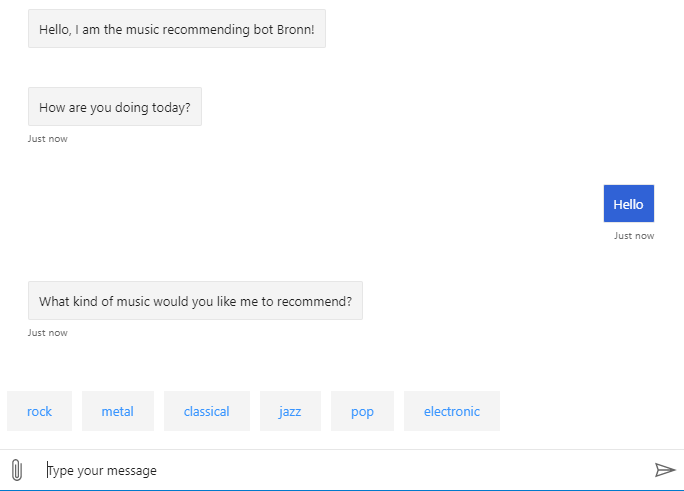
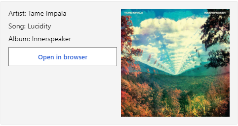

The Bronn Bot was created to help users find music through a bot developed using the Bot Framework. In this document we’ll go through how to run Bronn on your local machine, as well has the key components which the bot is built upon.
Demonstration of how Bronn reacts to a neutral user greeting.

You'll need to have ASP.NET Core Runtime 3.1 installed to be able to create new bots from templates and run Bronn locally.
You can find the bot code at its Github Repository. Make sure that you are using the master branch.
dotnet new -i Microsoft.Bot.Builder.AI.Luis
dotnet new -i Microsoft.Bot.Builder.Dialogs
dotnet new --list to verify your installed packages.Bot Framework Emulator is a desktop application that allows bot developers to test and debug their bots on localhost or running remotely through a tunnel.
http://localhost:3978/api/messagesThe bot’s main features currently are:
The bot's conversational flow is currently orchestrated through a single Waterfall dialog. It handles the NLP processing of the user's input as well as generating prompts to retrieve user input.
You can see how the dialog is created upon a user being added:
MusicBot.cs lines 44-57
protected override async Task OnMembersAddedAsync(IList membersAdded, ITurnContext turnContext, CancellationToken cancellationToken)
{
var welcomeText = "Hello, I am the music recommending bot Bronn!";
foreach (var member in membersAdded)
{
if (member.Id != turnContext.Activity.Recipient.Id)
{
await turnContext.SendActivityAsync(MessageFactory.Text(welcomeText, welcomeText), cancellationToken);
await Dialog.RunAsync(turnContext, ConversationState.CreateProperty(nameof(DialogState)), cancellationToken);
}
}
}
Within the RecommendationDialog's constructor, you can see the chronological order in which the bot will collect user input. At first there's an introduction step which handles the initial greeting. Then the
GenreStepAsync and the RecommendationStepAsync steps retrieve a genre and compute a song from
the given genre respectively. Finally the confirmation step determines whether to keep suggesting songs from the same genre or to trace back to the genre step.
dialogs/RecommendationDialog.cs lines 25-33
// This array defines how the Waterfall will execute.
var waterfallSteps = new WaterfallStep[]
{
IntroStepAsync,
GenreStepAsync,
RecommendationStepAsync,
ConfirmationStepAsync,
};
Adaptive cards enhance the user’s experience by showing song information, album art, and providing a link to open the song in a browser. To achieve this feature, the skeleton of the card is formed from
the cards/songCard.json file.

Once the RecommendationStepAsync has computed a song to recommend, it reads the songCard.json file and updates the default values based on the selected song. Since each song is created using
the Song.cs, extracting song properties is as simple as writing song.artist.
dialogs/RecommendationDialog.cs lines 360-371
// Retrieve random song from the given genre
Random rand = new Random();
int genreCount = rand.Next(songs[Genre].Count);
Song song = songs[Genre][genreCount];
string messageText = "I recommend listening to:";
var message = MessageFactory.Text(messageText);
await stepContext.Context.SendActivityAsync(message, cancellationToken);
// Show card for this song
var cardAttachment = CreateAdaptiveCardAttachment(song.artist, song.name, song.album, song.url);
var response = MessageFactory.Attachment(cardAttachment);
Currently the bot supports a termination interruption to end the conversation. To achieve this, every time the dialogue continues; the program checks for termination keywords. Once the user triggers this interruption, all dialogues are immediately canceled.